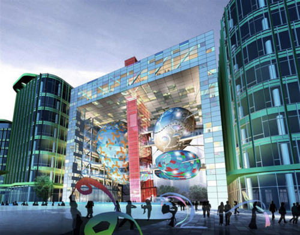

Tue, 22 Feb 2011 07:52:00 · Shanghai · China · Architecture
awesome futuristic and green design of shanghai

AWESOME futuristic and green design of Shanghai International Cruise Terminal by Sparch Architects. Read more about it here.
Tue, 22 Feb 2011 07:52:00 · Shanghai · China · Architecture

AWESOME futuristic and green design of Shanghai International Cruise Terminal by Sparch Architects. Read more about it here.